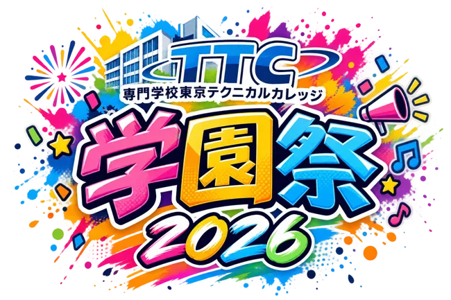

学園祭 Chat Bot
TTC 学園祭 2026 • Your Festival Guide
● ONLINE🎪 学園祭インフォメーション
知りたい項目を選んでください。
※ 詳細な日時・場所は学校の公式案内をご確認ください。TTC 学園祭 2026 • キーワード対応チャットボット
学園祭をもっと楽しく。気になる情報をチャットで簡単にチェック！

TTC 学園祭 2026 • Your Festival Guide
● ONLINE知りたい項目を選んでください。
※ 詳細な日時・場所は学校の公式案内をご確認ください。